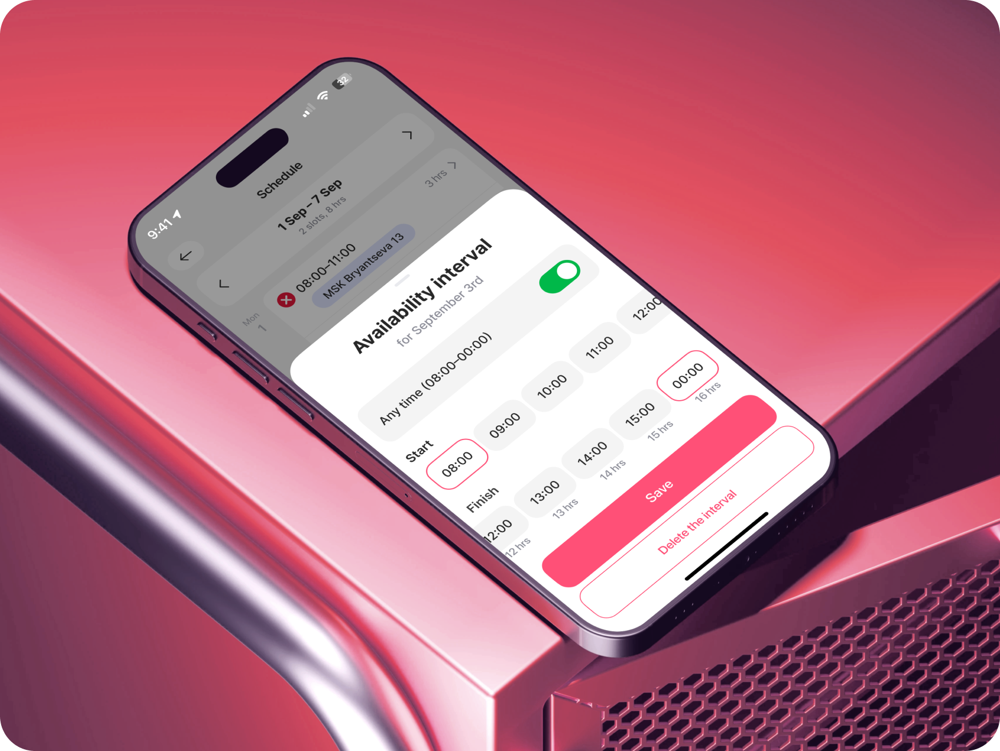
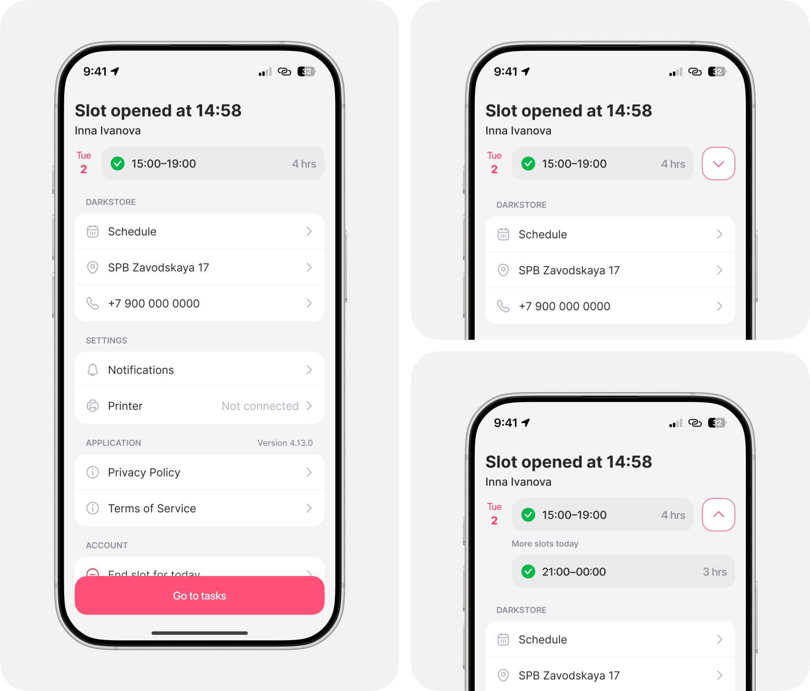
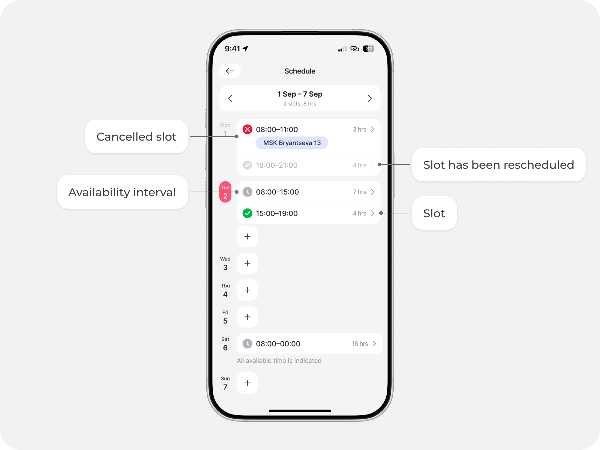
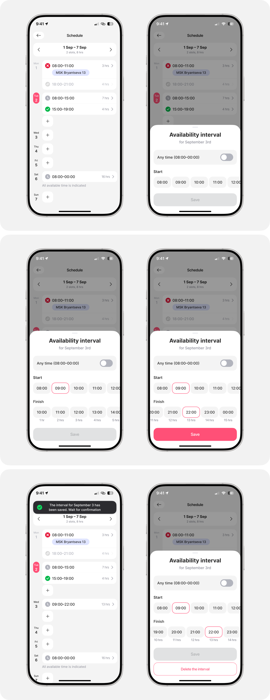
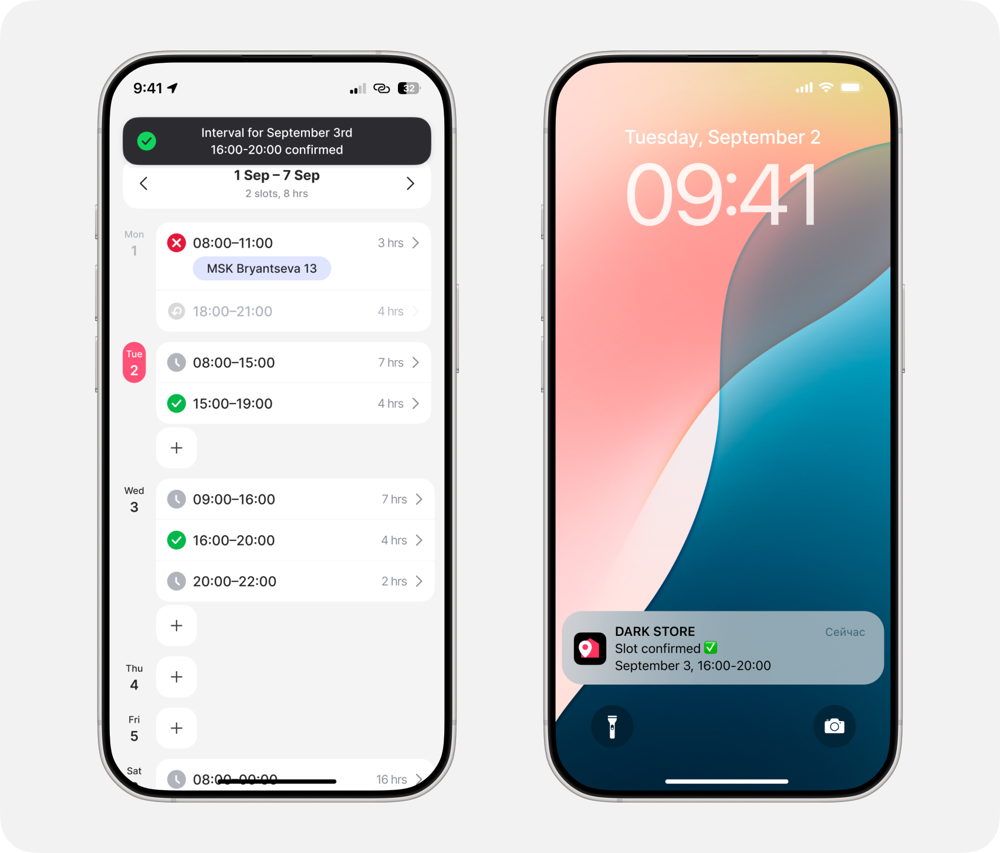

Picker schedule

Сборщики приходят в дарк стор в утвержденное администратором и координацией время. Бизнесу важно, чтобы в пиковые часы заказов в дарк сторах было достаточное количество сборщиков
Metrics
• Time to Task
• Speed of taking a task into work
• Product quality
• Speed of taking a task into work
• Product quality
DAU
7K+
Dark Stores
2 400
My role
Worked end-to-end on the project: from discovery and problem definition through design to final release
• Провела интервью с бизнесом, чтобы выявить ключевые
проблемы
• Провела с исследователем интервью с сборщиков и
администраторов, для документации процесса AS IS
• Сформировала CJM и Blue Print
• Провела 8 UX тестов
• Запуск обновления на 2 400 дарк стора
Business problem
Администраторы составляли расписание без учёта
пиковых нагрузок, из-за чего в вечерние часы не хватало сотрудников для оперативной
сборки заказов, что приводило к опозданиям
За выход сборщиков в дарк сторы отвечает
слишком много людей – это администраторы и сотрудники отдела координации
The main insight
В ходе исследования выяснила, что метод формирования выхода сборщиков разнится от дарк стора к дарк стору
Сборщики указывают время доступности через приложение для
курьеров, это приводит к ошибкам, если сотрудник еще работает курьером
Сборщики пишут в чате и админ сам пишет сотрудникам
координации, когда нужно вывести сборщика
Task
По итогам презентации результатов исследования бизнесу было принято решение создать раздел с расписанием для сборщиков.
Нужно создать раздел, в котором сборщики смогут указывать своё доступное для выхода время. За подтверждение выхода в дарк стор будут отвечать сотрудники отдела координации
Hypotheses
Отдельный раздел в приложении для сборщиков
позволит избежать ошибок при наличии мультиролей
Time to Task
Исключение администратора из процесса
позволит сократить фрод
Fraud
Раздел, в котором сборщик будет видеть свои
слоты, позволит сделать процесс прозрачным
CSAT
Сотрудники координации будут обеспечивать
выход необходимого количества сотрудников в пиковые часы
Time to Task
Main

Раздел
Интервал доступности – это время, которое указывает
сборщик.
Слот – это подтверждённое время сотрудником координации, когда сборщик приходит

Добавление слота
Сборщики указывают время, в которое они готовы выйти в дарк стор

Подтверждение слота
Сотрудники координации подтверждают время, в которое сборщик должен выйти

Result
-4%
Time from order creation to
delivery handoff
-6%
Time from order creation to picking
start
+2%
Share of orders picked during peak
hours
Released
2 400 dark stores
Ключевым результатом стало присутствие
достаточного количества сотрудников в дарк сторах в пиковые часы